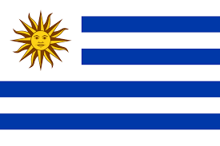
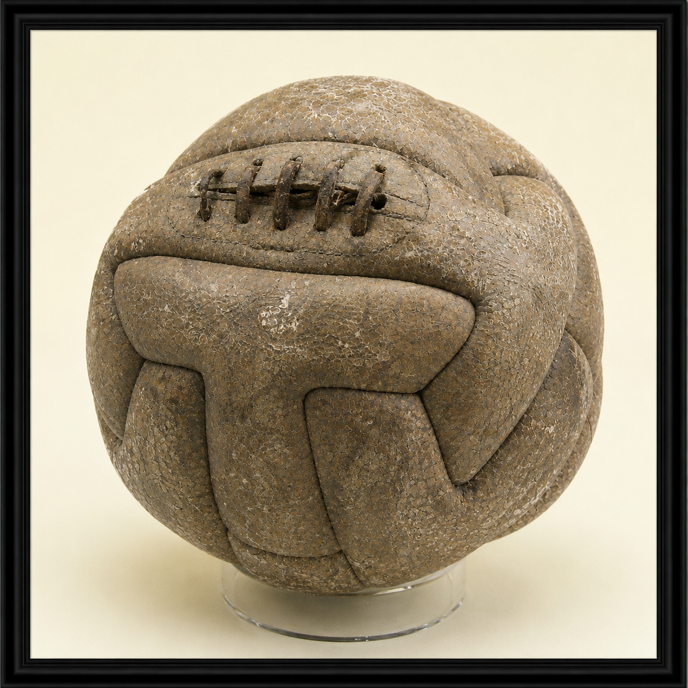
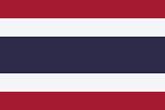

¿De qué se trató el Mundial de 1930?
La Copa Mundial de la FIFA 1930 fue el primer torneo internacional de fútbol organizado exclusivamente para selecciones nacionales. Su objetivo era reunir a los mejores equipos del mundo en una competencia independiente de los Juegos Olímpicos, dando origen a un nuevo campeonato que con el paso de los años se convertiría en el evento deportivo más importante del planeta.
Este torneo representó un antes y un después para el fútbol, ya que demostró que era posible organizar una competencia mundial entre países de distintos continentes. Además, permitió que miles de aficionados siguieran por primera vez un campeonato de esta magnitud, sentando las bases para el crecimiento y la popularidad que hoy tiene la Copa del Mundo.
Aunque participaron menos selecciones que en los Mundiales actuales, la edición de 1930 dejó un legado histórico que transformó el fútbol para siempre y dio inicio a una tradición que continúa vigente hasta nuestros días.
Informacion que tenes que saber
Info general
- Pais Anfitrion: Uruguay
- Fecha de Inicio:
13 de Julio de 1930
(13/07/1930) - Fecha de Finalizacion:
30 de Julio de 1930
(30/07/1930) - Duracion: 17 dias
- Organizador: FIFA
- Edicion: I
Estadisticas
- Partidos jugados: 18
- Goles anotados: 70
- Promedio de gol: 3,89
- Máximo goleador:
Guillermo Stábile
(8 goles) - Final:
Uruguay 4 - 2 Argentina
info de la Ciudad
- Ciudad Sede: Montevideo
- Selecciones Participantes: 13
- Estadios Utilizados: 3
- Estadio Principal:
Estadio Centenario
Podio
| Posicion | Seleccion | Bandera |
|---|---|---|
| 1º Puesto | Uruguay |  |
| 2º Puesto | Argentina |  |
| 3º Puesto | Estados Unidos |  |
| 4º Puesto | Yugoslavia |  |
(Nota: En 1930 no se disputó un partido por el tercer puesto. La FIFA otorgó de forma oficial el tercer lugar a Estados Unidos y el cuarto a Yugoslavia basándose en el rendimiento general durante el torneo).
Historia completa de la Copa Mundial de la FIFA 1930
La Copa Mundial de la FIFA de 1930 fue la primera edición del torneo y se disputó en Uruguay entre el 13 y el 30 de julio de 1930. La FIFA decidió crear una competencia independiente de los Juegos Olímpicos debido al enorme crecimiento del fútbol a nivel internacional.
Uruguay fue elegido como sede por ser bicampeón olímpico (1924 y 1928), por celebrar el centenario de su Constitución y por asumir gran parte de los gastos de organización y transporte de las delegaciones. Sin embargo, la Gran Depresión dificultó el viaje de las selecciones europeas, por lo que solo cuatro equipos de ese continente participaron. En total compitieron 13 selecciones, siendo el único Mundial disputado sin eliminatorias clasificatorias.
Desarrollo del torneo
Todos los partidos se disputaron en Montevideo, utilizando el Estadio Centenario, el Gran Parque Central y el Estadio Pocitos. Debido a las fuertes lluvias que retrasaron la construcción del Centenario, los primeros encuentros se jugaron en los otros dos estadios.
El torneo comenzó el 13 de julio de 1930 con las victorias de Francia sobre México por 4-1 y de Estados Unidos frente a Bélgica por 3-0. En ese primer partido, Lucien Laurent marcó el primer gol en la historia de los Mundiales.
La competición se organizó en cuatro grupos y únicamente el primero de cada grupo avanzaba a las semifinales. Los clasificados fueron Argentina, Uruguay, Estados Unidos y Yugoslavia. En semifinales, Argentina y Uruguay ganaron ambos por 6-1, clasificándose para disputar la primera final de la historia.
La gran final
La final se jugó el 30 de julio de 1930 en el Estadio Centenario ante aproximadamente 90.000 espectadores. Argentina terminó el primer tiempo ganando 2-1, pero Uruguay reaccionó en la segunda mitad y remontó el encuentro para imponerse por 4-2.
Los goles uruguayos fueron convertidos por Pablo Dorado, Pedro Cea, Santos Iriarte y Héctor Castro, permitiendo a la "Celeste" convertirse en la primera campeona del mundo. El máximo goleador del torneo fue Guillermo Stábile con ocho tantos, mientras que José Nasazzi lideró al equipo campeón como capitán. El Mundial de 1930 marcó el inicio de la competición deportiva más importante del fútbol y estableció una tradición que continúa celebrándose cada cuatro años.
⚽ Pelota Oficial del Mundial 1930

TIENTO
La Tiento fue una de las pelotas utilizadas durante la Copa Mundial de la FIFA Uruguay 1930, el primer Mundial de la historia. Estaba fabricada en cuero natural y cosida completamente a mano, con un característico cierre mediante cordones.
Información General
Nombre: Tiento
Fabricante: Fabricación artesanal uruguaya
Material: Cuero natural cosido a mano
Color: Marrón
Sistema de cierre: Cordones de cuero
Torneo: Copa Mundial FIFA Uruguay 1930
Características
- Fabricada completamente en cuero.
- Cosida a mano por artesanos.
- Poseía una cámara de goma en su interior.
- Su cierre con cordones podía resultar incómodo al cabecear.
- Absorbía agua cuando llovía, aumentando considerablemente su peso.
Dato curioso
En la final entre Uruguay y Argentina se utilizaron dos pelotas diferentes: la Tiento argentina durante el primer tiempo y una pelota uruguaya durante el segundo, tras un acuerdo entre ambas selecciones. Uruguay terminó ganando el partido por 4-2 y se convirtió en el primer campeón del mundo.
Selecciones Participantes
Asia / Africa



(Nota:A diferencia de Japón y Tailandia, Egipto sí tenía la intención de jugar e incluso estaba inscrito, pero este imprevisto con el transporte les impidió llegar).
Africa
(Nota:A diferencia de Japón y Tailandia, Egipto sí tenía la intención de jugar e incluso estaba inscrito, pero este imprevisto con el transporte les impidió llegar).
Sudamérica
Argentina  Bolivia
Bolivia  Brasil
Brasil  Chile
Chile  Paraguay
Paraguay  Perú
Perú Europa
 Bélgica
Bélgica  Francia
Francia  Rumania Yugoslavia
Rumania Yugoslavia Norteamérica
Estados Unidos  México
México
Sedes |
||||
|---|---|---|---|---|
|
El Mundial de 1930 estaba planeado para jugarse por completo en el Estadio Centenario, una gran obra construida especialmente para el torneo y para conmemorar el centenario de la independencia de Uruguay. Con capacidad para 90.000 espectadores, era uno de los estadios más importantes del mundo en esa época. Sin embargo, las fuertes lluvias que afectaron a Montevideo antes del inicio del campeonato retrasaron la finalización de las obras. Por este motivo, los primeros encuentros se disputaron en el Gran Parque Central y en el Estadio Pocitos, donde se jugaron los dos primeros partidos de la historia de los Mundiales. El Estadio Centenario fue inaugurado el sexto día de competencia y, desde ese momento, todos los partidos restantes se jugaron allí. Años más tarde, en 1983, la FIFA lo declaró Monumento Histórico del Fútbol Mundial. Además, el Gran Parque Central recibió un reconocimiento especial por haber sido la sede del primer partido de la historia de la Copa Mundial de la FIFA. |
||||
| Nombre del Estadio | Estadio | Descripción | Capacidad aprox. | Partidos Jugados |
Estadio Centenario |
 |
Fue el estadio principal del Mundial y el más importante del torneo. Construido especialmente para la Copa del Mundo y para celebrar el centenario de la primera Constitución uruguaya, tenía capacidad aproximada para 90.000 espectadores. Allí se jugaron las semifinales y la final entre Uruguay y Argentina. La FIFA lo declaró en 1983 “Monumento Histórico del Fútbol Mundial”, siendo el único estadio con ese reconocimiento. | 90.000 | 11 |
Gran Parque Central |
 |
Propiedad del Club Nacional de Football, es uno de los estadios más históricos de América. Fue sede de uno de los primeros partidos en la historia de los mundiales el 13 de julio de 1930. Construido en 1900, sigue en funcionamiento actualmente y es considerado uno de los estadios más antiguos del continente. | 20.000 | 6 |
Estadio Pocitos |
 |
Era el estadio del Club Atlético Peñarol y fue una de las sedes temporales utilizadas mientras terminaban el Centenario. Allí se marcó el primer gol en la historia de los mundiales, anotado por Lucien Laurent en el partido entre Francia y México. El estadio fue demolido años después debido al crecimiento urbano de Montevideo. | 1.000 | 2 |
Arbitros de la Copa Mundial de la FIFA 1930 por pais
| Arbitros | Pais |
|---|---|
| John Langenus | |
| Henri Christophe | |
| Gilberto de Almeida Rêgo | |
| José Macias | |
| Aníbal Tejada | |
| Domingo Lombardi | |
| Francisco Matteucci | |
| Ricardo Vallarino | |
| Martín Aphesteguy | |
| Alberto Alonso | |
| John Balway | |
| Ulises Saucedo | |
| Alberto Warnken | |
| Gaspar Vallejo | |
| Constantin Rădulescu | |
Resumen del torneo — Copa Mundial de la FIFA 1930
Fase de grupos
Grupo 1
- Argentina (6)
- Chile (4)
- Francia (2)
- México (2)
Francia
4:1 (3:0)
México
Lucien Laurent (frances) marcó el primer gol en la historia de los mundiales. Maschinot marcó el primer doblete en mundiales.
Argentina
4:1 (0:0)
Francia
Chile
3:0 (1:0)
Mexico
Manuel Rosas fue el primer jugador en anotar un autogol en la Copa del Mundo.
Chile
1:0 (0:0)
Francia
Argentina
6:3 (3:1)
Mexico
Argentina
3:1 (2:1)
Chile
| Seleccion | Pts. | PJ | PG | PE | PP | GF | GC | Dif. |
|---|---|---|---|---|---|---|---|---|
| Argentina |
6 | 3 | 3 | 0 | 0 | 10 | 4 | 6 |
| Chile |
4 | 3 | 2 | 0 | 1 | 5 | 3 | 2 |
| Francia |
2 | 3 | 1 | 0 | 2 | 4 | 3 | 1 |
| Mexico |
0 | 3 | 0 | 0 | 3 | 4 | 13 | -9 |
Grupo 2
- Yugoslavia (4)
- Brasil (2)
- Bolivia (0)
Yugoslavia
2:1 (2:0)
Brasil
Yugoslavia
4:0 (0:0)
Bolivia
Brasil
4:0 (1:0)
Bolivia
| Seleccion | Pts. | PJ | PG | PE | PP | GF | GC | Dif. |
|---|---|---|---|---|---|---|---|---|
| Yugoslavia |
4 | 2 | 2 | 0 | 0 | 6 | 1 | 5 |
| Brasil |
2 | 2 | 1 | 0 | 1 | 5 | 2 | 3 |
| Bolivia |
0 | 2 | 0 | 0 | 2 | 0 | 8 | -8 |
Grupo 3
- Uruguay (4)
- Rumania (2)
- Perú (0)
Rumania
3:1 (1:0)
Peru
Plàcido Galindo (peruano) es el primer jugador en ser expulsado en copas mundiales.
Peru
Rumania
| Seleccion | Pts. | PJ | PG | PE | PP | GF | GC | Dif. |
|---|---|---|---|---|---|---|---|---|
| Uruguay | 4 | 2 | 2 | 0 | 0 | 5 | 0 | 5 |
| Rumania |
2 | 2 | 1 | 0 | 1 | 3 | 5 | -2 |
| Peru |
0 | 2 | 0 | 0 | 2 | 1 | 4 | -3 |
Grupo 4
- Estados Unidos (4)
- Paraguay (2)
- Bélgica (0)
Estados Unidos
3:0 (2:0)
Belgica
Estados Unidos
3:0 (2:0)
Paraguay
Bert Patenaude se convirtio en el primer jugador reconocido por la FIFA que marco una tripeta.
Paraguay
1:0 (1:0)
Belgica
| Seleccion | Pts. | PJ | PG | PE | PP | GF | GC | Dif. |
|---|---|---|---|---|---|---|---|---|
| Estados Unidos |
4 | 2 | 2 | 0 | 0 | 6 | 0 | 6 |
| Paraguay |
2 | 2 | 1 | 0 | 1 | 1 | 3 | -2 |
| Belgica |
0 | 2 | 0 | 0 | 2 | 0 | 4 | -4 |
Tercer y cuarto puesto
En el Mundial de 1930 no se disputó un partido por el tercer puesto, siendo la única edición de la historia en la que esto ocurrió. Por ello existen diferentes versiones sobre quién ocupó la tercera posición.
Actualmente, la FIFA considera a Estados Unidos como tercer clasificado y a Yugoslavia como cuarto, aunque años después aparecieron versiones que afirmaban que Yugoslavia había recibido una medalla de bronce, algo que nunca fue reconocido oficialmente.
Argentina
6-1
Estados Unidos
Yugoslavia
Semifinal y Final
Semifinales
Argentina 6 Estados Unidos 1 Yugoslavia 1Final
Argentina 2Máximos goleadores — Copa Mundial de la FIFA 1930
| Jugador | Goles | Pais |
|---|---|---|
| Guillermo Stábile | 8 | |
| Pedro Cea | 5 | |
| Bert Patenaude | 4 | |
| Carlos Peucelle | 3 | |
| Pablo Dorado | 3 | |
| Santos Iriarte | 3 | |
| Preguinho | 3 | |
| Ivan Bek | 3 | |
| Aleksandar Tirnanić | 3 | |
| Guillermo Subiabre | 3 | |
Máximos asistentes — Copa Mundial de la FIFA 1930
Las asistencias oficiales del Mundial de 1930 no fueron registradas por la FIFA, por lo que no existe una estadística completamente oficial. Sin embargo, historiadores y registros posteriores reconocen a varios jugadores destacados en creación de goles.
| Jugador | Asistencias aprox. | Pais |
|---|---|---|
| Carlos Peucelle | 3 | |
| Jose Nasazzi | 2 | |
| Hector Scarone | 2 | |
| Pedro Cea | 2 | |
| Guillermo Stabile | 2 | |
| Aleksandar Tirnanić | 2 | |
| Preguinho | 1 | |
| Bert Paternaude | 1 | |
| Guillermo Subiabre | 1 | |
| Ivan Bek | 1 | |
Controversias de la Copa Mundial de la FIFA 1930
A pesar de haber sido un éxito deportivo y el inicio de la historia de los Mundiales, la Copa Mundial de la FIFA 1930 también estuvo marcada por varias polémicas. Desde problemas de organización y decisiones arbitrales hasta conflictos entre selecciones, estas controversias quedaron registradas como parte del primer campeonato del mundo.
-
Poca participación europea
Aunque la FIFA invitó a numerosas selecciones de Europa, la mayoría rechazó participar debido al largo viaje en barco hasta Uruguay, que duraba entre dos y tres semanas. Además del elevado costo, muchos clubes se negaban a ceder a sus jugadores durante tanto tiempo. Como consecuencia, únicamente Francia, Bélgica, Rumania y Yugoslavia aceptaron la invitación, convirtiéndose en los únicos representantes europeos del torneo.
-
Finalización anticipada del partido Francia vs. Argentina
Durante el encuentro entre Francia y Argentina, el árbitro brasileño Almeida Rêgo dio por finalizado el partido antes de cumplirse los 90 minutos reglamentarios. En ese momento, el delantero francés Marcel Langiller avanzaba con una clara oportunidad de ataque. Tras las intensas protestas de los jugadores franceses, el árbitro reanudó el encuentro durante unos instantes, aunque el resultado ya no cambió y Argentina ganó 1-0.
-
Los cinco penales de Argentina vs. México
El árbitro boliviano Ulises Saucedo sancionó cinco penales durante el partido entre Argentina y México, una cifra que sigue siendo una de las más altas en la historia de los Mundiales. Varias de esas decisiones fueron consideradas muy discutibles por la prensa y los espectadores. Finalmente, Argentina se impuso por 6-3 en un partido lleno de acciones polémicas.
-
Quejas de Yugoslavia en semifinales
Luego de caer por 6-1 ante Uruguay en las semifinales, la delegación yugoslava expresó su descontento con el arbitraje. Afirmaban que algunas decisiones favorecieron al conjunto local, incluyendo un gol que consideraban irregular. Aunque nunca hubo una revisión oficial, esta polémica permaneció durante muchos años como una de las más recordadas del torneo.
-
La disputa por el balón de la final
Antes de la gran final entre Argentina y Uruguay surgió una discusión porque ambas selecciones querían utilizar un balón fabricado en su propio país. Para resolver el conflicto, el árbitro belga John Langenus decidió realizar un sorteo. Según la versión más aceptada, la primera mitad se disputó con la pelota argentina y la segunda con la uruguaya, un hecho que quedó como una de las curiosidades más famosas de la historia de los Mundiales.
-
Incidentes después de la final
La victoria de Uruguay por 4-2 desató una enorme celebración en Montevideo, pero también provocó tensiones entre aficionados uruguayos y argentinos. En Buenos Aires se registraron protestas, disturbios y algunos enfrentamientos relacionados con la derrota argentina. Incluso las relaciones diplomáticas entre ambos países atravesaron momentos de tensión durante los días posteriores al encuentro.
Tabla de Rendimiento y Posiciones Finales
| Posicion | Seleccion | Etapa Alcanzada | PJ | PG | PE | PP | GF | GC | DG | Rendimiento |
|---|---|---|---|---|---|---|---|---|---|---|
| 1 | Uruguay | Campeon | 4 | 4 | 0 | 0 | 15 | 3 | +12 | 100% |
| 2 | Argentina |
Subcampeon | 5 | 4 | 0 | 1 | 18 | 9 | +9 | 80% |
| 3 | Estados Unidos |
Fase de grupos | 3 | 2 | 0 | 1 | 7 | 6 | +1 | 66,7% |
| 4 | Yugoslavia |
Fase de grupos | 3 | 2 | 0 | 1 | 7 | 7 | 0 | 66,7% |
| 5 | Chile |
Fase de grupos | 3 | 2 | 0 | 1 | 5 | 3 | +2 | 66,7% |
| 6 | brasil |
Fase de grupos | 2 | 1 | 0 | 1 | 5 | 2 | +3 | 50% |
| 7 | Rumania |
Fase de grupos | 2 | 1 | 0 | 1 | 3 | 5 | -2 | 50% |
| 8 | Paraguay |
Fase de grupos | 2 | 1 | 0 | 1 | 1 | 3 | -2 | 50% |
| 9 | Francia |
Fase de grupos | 3 | 1 | 0 | 2 | 4 | 3 | +1 | 33,3% |
| 10 | Peru |
Fase de grupos | 2 | 0 | 0 | 2 | 1 | 4 | -3 | 0% |
| 11 | Belgica |
Fase de grupos | 2 | 0 | 0 | 2 | 0 | 4 | -4 | 0% |
| 12 | Bolivia |
Fase de grupos | 2 | 0 | 0 | 2 | 0 | 8 | -8 | 0% |
| 13 | Mexico |
Fase de grupos | 3 | 0 | 0 | 3 | 4 | 13 | -9 | 0% |
- PJ: PARTIDOS JUGADOS
- PG: PARTIDOS GANADOS
- PE: PARTIDOS EMPATADOS
- PP: PARTIDOS PERDIDOS
- GF: GOLES A FAVOR
- GC: GOLES EN CONTRA
- DG: DIFERENCIA DE GOL
- RENDIMIENTO: BASADA EN LA EFECTIVIDAD DE PARTIDOS (PG, PE, PP)